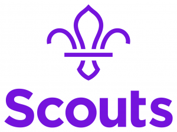

Thank you for taking this next step with us. We want you to have the best welcome possible. Within your first 30 days, you’ll have a chat with a Welcome Conversation Volunteer and your Team Leader. Here, you can chat about everything you need to feel confident in your new role.
Tick off the following points together for an easy start to your new role. (Click a box to tick it off.)
Tell us a little bit about yourself and your interest in Scouts. Do you have any access needs we can support you with?
Do you know what tasks you’ll be doing? Let us know which tasks you’ve signed up for and how you’ll organise your time to get them done.
At Scouts, we want to help you grow. Chat through our learning and development opportunities.
It’s everyone’s responsibility in Scouts to keep young people safe. Chat through the Scout values, promise, policies, Yellow Card and volunteering culture.
We make your journey easy to follow through our membership system. Can you access this?
Complete the rest of your steps to becoming a full member including providing references, signing declarations, completing disclosure and Confidential Enquiry checks and your Growing Roots learning.
Thank you for everything you’ve done so far and for having this conversation with us.
Good luck on your volunteering journey!

Version 2, May 2025 — landscape screen edition